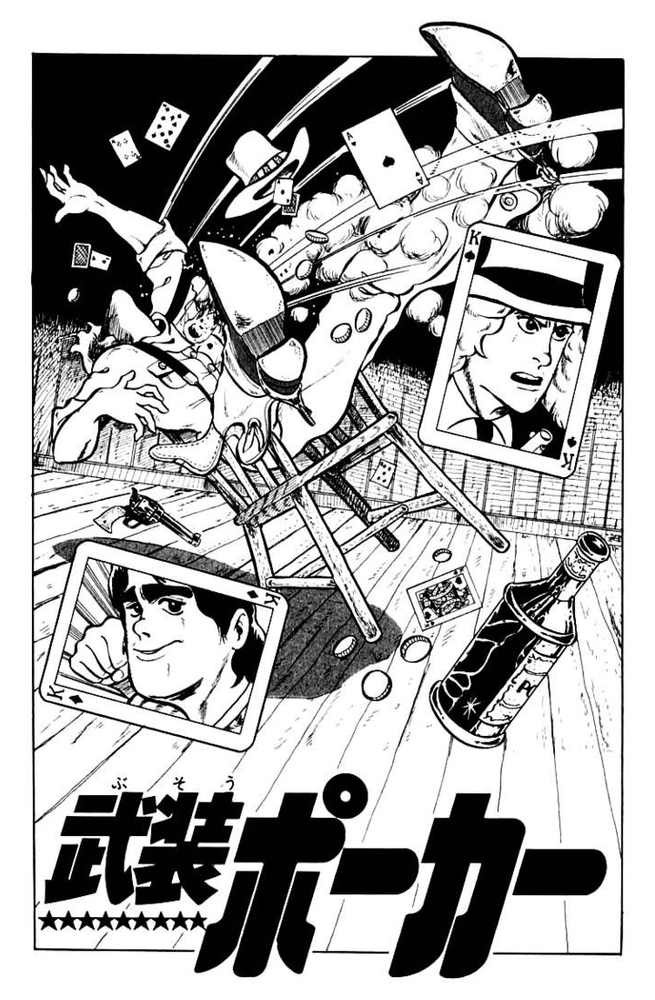
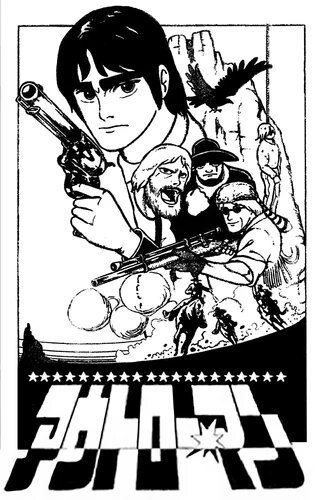
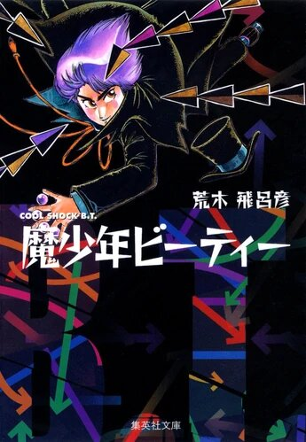
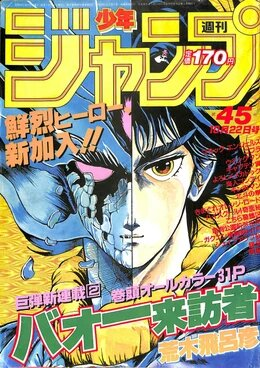
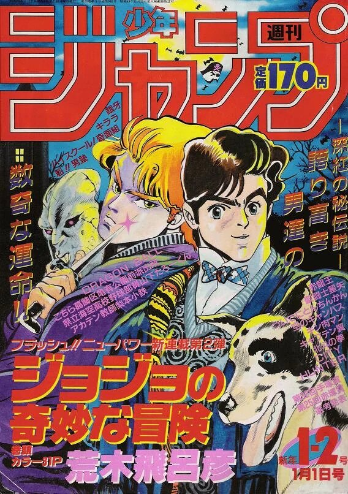
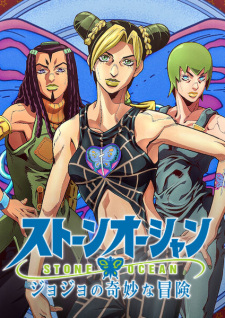

Arakijeva dela
Hirohiko Araki
Hirohiko Araki (rođen 7. juna 1960. u Sendaiju, Mijagi) je japanski umetnik i pisac mangi. Prvenstveno poznat po tome što je autor JoJo's Bizarre Adventure ali tokom svoje karijere se proslavio uz svoje manje poznate naslove. Araki je svoju prvu mangu nacrtao dok je bio u 4. razredu. U srednjoj školi, drug mu je pohvalio mangu i od tad je počeo da piše mange u tajnosti od svojih roditelja.
Arakijev crtež obično uključuje idealizovane figure u širokim, ekspresivnim pozama u avanturističkim razmerama i uglovima; sa oštro obojenim linijama i razbacanim, pocrnelim ravnima; dajući im skulpturalni efekat. U ilustracijama u boji i stranicama, Araki varira grubo komplementarne jukstapozicije boja.
mange
Neke od početnih mangi koje su obeležile Arakijevu karijeru:

Poker
Poker
Under Arms
Poker Under Arms je prva manga koju je Araki objavio 1980. godine i sastojala se samo od 30 stranica.
Više o mangi »

Outlaw
Outlaw
Man
Outlaw Man je Arakijeva druga kratka manga objavljena 1981. godine i prva manga koja je objavljena u Weekly Shōnen Jump.
Više o mangi »

Cool Shock
Cool Shock
B.T.
Cool Scock B.T. je prva Arakijeva manga koja se sastojala iz više delova koji su nedeljno izlazili od 1982. do 1983. godine.
Više o mangi »

Baoh
Baoh
The Visitor
Boah: The Visitor je manga koja je isto izlazila u magazinu Weekly Shōnen Jump i takođe je prva Arakijeva manga koja je dobila engleski prevod.
Više o mangi »

JoJo's Bizarre
JoJo's Bizarre
Adventure
JoJo's Bizarre Adventure je manga koja je proslavila Arakija. Počela je da izlazi od 1987. godine u delovima (8 delova trenutno).
Više o mangi »anime
Jedina manga koja je dobila anime adaptaciju je JoJo's Bizarre Adventure i rađena je preko David Production studia:

JoJo's Bizarre
Adventure
Ovo je prva sezona koja se sastojala od prva dva i najkraća dela. Ima 26 epizoda i prati priču prva dva Jojoa.
Više o animeu »
JoJo's Bizarre Adventure: Stardust Crusaders
Posle 2 godine izlazi druga se zona koja je uzela priču iz trećeg dela mange i bila je sama podeljena na 2 dela.
Više o animeu »
JoJo's Bizarre Adventure: Diamond is Unbreakable
Zbog velike gledanosti druge sezone, studio je odlučio da nastavi sa animacijom i izbacili su četvrti deo mange.
Više o animeu »
JoJo's Bizarre Adventure: Golden Wind
U petom delu upoznajemo glavnog Jojoa ove priče koji nije direktan potomak kao ostali protagonisti ali ipak ima tu Jojo krv.
Više o animeu »

JoJo's Bizarre Adventure: Stone Ocean
Ovo je poslednji deo ove sage i prvi deo u kom je glavni protagonista žena. Takođe je i prvi deo koji je Netflix original.
Više o animeu »